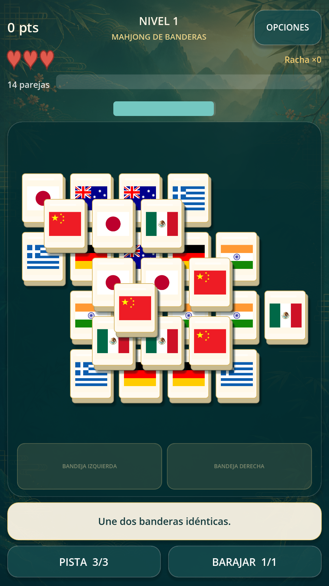
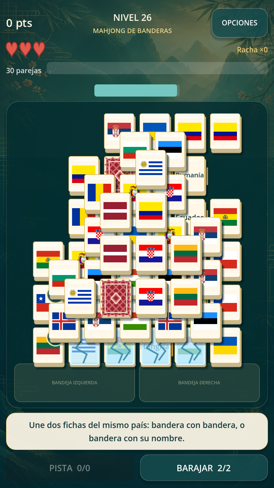
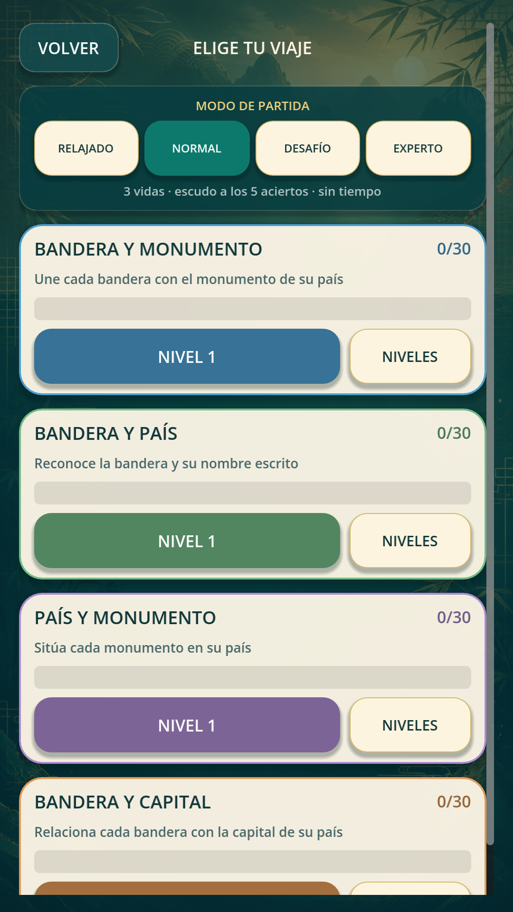
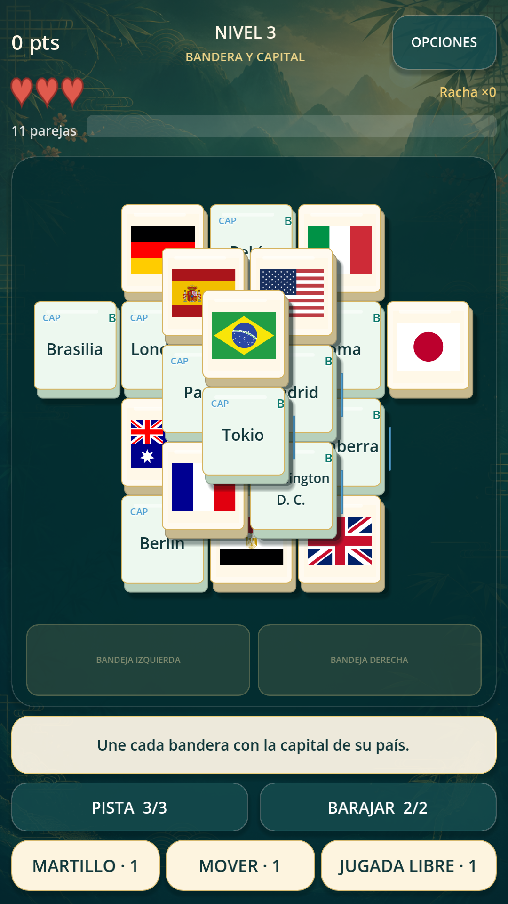

Observa y planifica
Busca dos fichas libres con la misma bandera. Las capas y las formas del tablero hacen que cada movimiento cuente.
Mahjong y geografía
Une banderas, encuentra conexiones y despeja tableros con varias capas. Una partida tranquila o un reto de estrategia: tú eliges.
Próximamente en Google Play · Android
Busca dos fichas libres con la misma bandera. Las capas y las formas del tablero hacen que cada movimiento cuente.
Practica bandera y país, bandera y capital, bandera y monumento, o país y monumento. También tienes un reto diario.
Cuatro modos, pistas, fondos de tablero y ajustes de texto grande, movimiento reducido y sonido. Progreso local en tu dispositivo.
Dentro del juego




Interfaz y contenidos en español. Los tableros funcionan sin conexión; los anuncios necesitan Internet. No necesitas una cuenta.
Contiene publicidad intersticial cada dos niveles de campaña completados. Al perder las vidas puedes elegir un anuncio bonificado para iniciar otra partida del mismo nivel con tres vidas. Algunos fondos también se desbloquean con anuncios bonificados. La recompensa requiere completar un anuncio disponible.
Consulta la política de privacidad o escríbenos a dvgamelab@gmail.com.